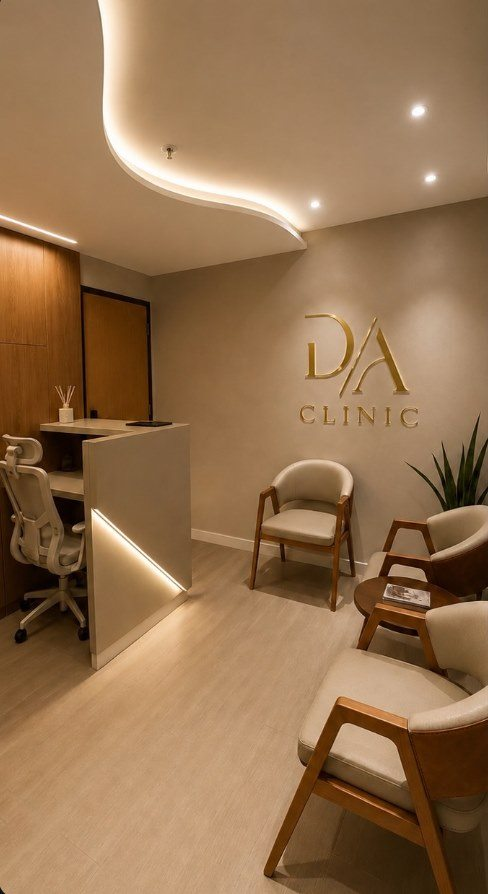
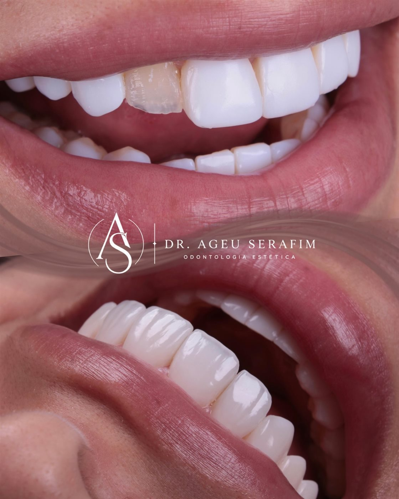
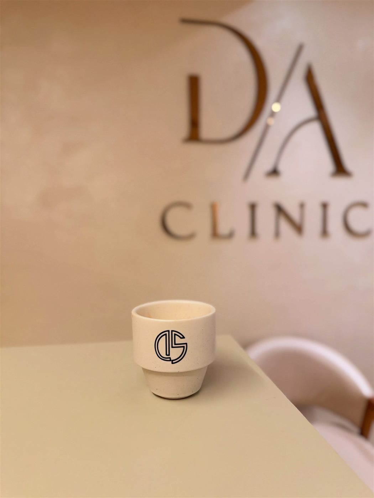

Facetas em resina que não parecem facetas.
Cada faceta é esculpida à mão livre, camada por camada, no formato e na cor que combinam com o seu rosto.

- Rua General Sócrates, 216, Penha de França
- Atendimento com hora marcada
- Dr. Ageu Serafim, CRO-SP 162354
Mais natural ou mais branco? Você escolhe.
A cor das facetas é definida junto com você na avaliação. Toque nos tons para ver a diferença.
Ilustração. A cor ideal é definida na avaliação, de acordo com o seu rosto e o seu tom de pele.
Alguns casos do Dr. Ageu
Casos realizados pelo Dr. Ageu Serafim com autorização dos pacientes. O resultado depende da avaliação individual.
Como é feito
- 1
Avaliação
Você conta como imagina o seu sorriso e o Dr. Ageu avalia os seus dentes.
- 2
Planejamento e execução
Cor, formato e proporção definidos para o seu rosto. Em muitos casos, tudo acontece em uma única sessão.
- 3
Manutenção
Consultas de acompanhamento mantêm o brilho e a cor por mais tempo.
Já tem lentes e não se reconhece no próprio sorriso?
Boa parte de quem procura a clínica já fez lentes antes. Refazer não é só trocar: é entender o que não funcionou e reconstruir forma, textura e proporção.

Dr. Ageu Serafim
Cirurgião-dentista, CRO-SP 162354. Trabalha com lentes em resina estratificada e com o retrabalho de lentes feitas anteriormente. Para ele, um sorriso bem-feito não chama atenção por parecer artificial: chama atenção porque combina com quem sorri.
A D/A Clinic
Um espaço tranquilo na Penha de França, com protocolos de higienização e esterilização.

Dúvidas comuns
Onde estamos
Rua General Sócrates, 216, Penha de França, São Paulo (SP).